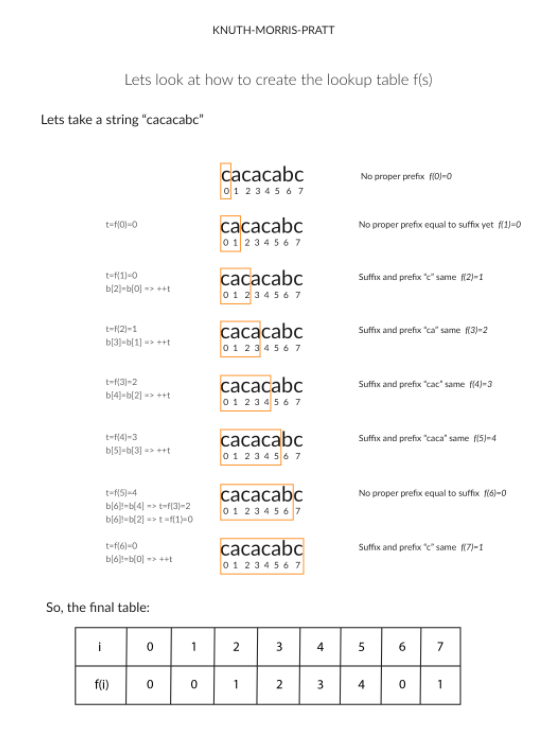

Shortest Palindrome
通过在字符串 S 前面增加字符，来让它变成回文 ，找到并返回这样的最短的回文。
For example:
Given
"aacecaaa", return"aaacecaaa".Given
"abcd", return"dcbabcd".
核心是找到回文的部分
//简单粗暴的遍历
public Stirng shortestPalindrom(String s) {
int n = s.length();
String rev = new StringBuilder(s).reverse().toString();
for(int i = 0; i < n; i++) {
if(s.subString(0, n - i).equals(rev.substring(i))) {
return rev.substring(0,i) + s;
}
}
return "";
}
//双指针
public String shorestPalindrom(String s) {
int n = s.length();
int i = 0;
for(int j = n -1; j >= 0; j--) {
if(s.charAt(i) == s.charAt(j)) {
i++;
}
}
if(i == n) {
//找到了回文
return s;
}
//回文的前后部分以及反转，并且把前后和反转加上
StringBuilder revsb = new StringBuilder(s.substring(i));
String rev = revsb.reverse().toString();
return rev + shortestPalindrom(s.substring(0, i)) + s.substring(i);
}

//KMP
//KMP使用一个 列表存储相等的前缀和后缀的长度，通过这个，来计算往前移动的距离
public String shorestPalindrom(String s) {
int n = s.length();
String rev = new StringBuilder(s).reverse().toString();
String sNew = s + "#" + rev;
int nNew = sNew.length();
int[] f = new int[nNew];
for(int i = 0; i< nNew; i++) {
int t = f[i - 1];
while(t > 0 && sNew.charAt(i) != sNew.charAt(t)) {
t = f[t - 1];
}
if(sNew.charAt(i) == sNew.charAt(t)) {
++t;
}
f[i] = t;
}
return rev.substring(0, n - f[nNew - 1]) + s;
}